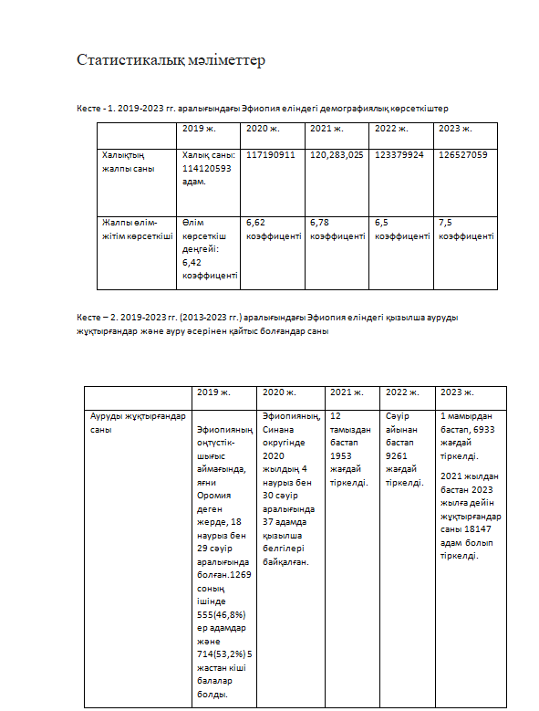
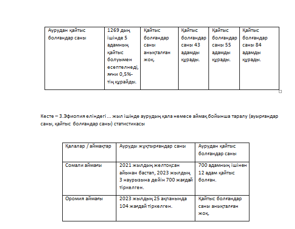

Эпидемиология
РесурсҚызылша барлық жерде кездеседі және кейбір елдерде эндемикалық болып табылады. Қызылша резервуары-науқас адам. Қызылшаның қоздырғышы ауа тамшылары арқылы беріледі. Науқастың ең үлкен эпидемиялық қаупі продромальды кезеңде және тері бөртпелері кезеңінде болады. Қызылша вирусы сыртқы ортада тұрақсыз, инсоляцияға, жоғары температураға сезімтал және дезинфекциялаушы заттар мен жуғыш заттардың әсерінен тез бұзылады. Қызылша вирусының антигендік құрылымы қызылша вирусының негізгі антигендері гемагглютинин, F ақуызы және NP нуклеокапсидті ақуыз болып табылады. Гемагглютинин мен F ақуызына AT жұқтырған жасушаларға қарсы цитотоксикалық әсер көрсетеді. Қызылша вирусы басқа морбилливирустармен жалпы антигендік детерминанттарға ие. Қызылша вирусының антигендік құрылымы тұрақты. Барлық белгілі штамдар бір серологиялық нұсқаға жатады.
1) Қызылша ДДҰ жою үшін белгіленген балалық шақтағы алдын алуға болатын жетекші вакцина болып табылады. Жыл сайын қызылшадан 20 млн-нан астам адам зардап шегеді, атап айтқанда Африка мен Азияда. Эфиопияның Оромия аймағынан жыл сайынғы тұтанулар тіркелген. Біз Оромия қызылшасын бақылау деректерін және құрамында вакцина (МКВ1) бар бірінші дозалы қызылшаны әкімшілік қамтуды қарап шықтық. Қызылшадан болатын өлімге байланысты айнымалыларды бағалау үшін дескриптивті статистика мен көпвариативті материалдық-техникалық регрессия орындалды. Оромияда қызылша жағдайының таралуының негізгі бағыттарын көзбен шолып көрсету үшін қосымша кеңістіктік картография орындалды. Қызылшаға күдікті 26 908 жағдай анықталды, оның ішінде 18 223 (68%) расталды. Орташа жасы 6 жас (IQ диапазоны 0,5-71 жас) және 288 қайтыс болғандар байқалды. Жалпы жағдайдың 29%-ы егілмеген, 46%-ында егу мәртебесі белгісіз. Ең жоғары ИР Гуджи аймағында (IR=190/100,000 халық) 1-4 жыл ішінде байқалды, бұл ретте ауылдық жерлерден көпшілік. Өліммен байланысты қауіп факторларына жас 5 жас (AOR=1,82) жатады. CI: 1,42-2.33), егілмеген күй (AOR=1.44, CI: 1,06-1,95) және стационарлық емдеу (AOR=2.12, CI: 1,58-2.85). Қызылшаның 8732 IgM теріс/анықталмаған үлгілерінің 10,5%-ы қызамыққа тән ИгМ-ге оң нәтиже берген. Қызылшаның өршуі Оромия өңірінде халықтың денсаулығына қатысты тұрақты алаңдаушылық тудырады. Облыста 1-15 жастағы балалар қызылшамен ауыру қаупі жоғары күйінде қалып отыр. Барлық балаларға, әсіресе ауылдық жерлерге жету үшін жоспарлы иммундауды күшейтуді және қызылша-қызамыққа (МР) қарсы вакцинаны қарастыруды ұсынамыз.[1]
2) Құрамында қызылша бар вакцинамен (МКВ) жоғары қамтылғанына қарамастан, табысы төмен елдер, оның ішінде Эфиопияда жиі өршумен қызылшаның жоғары берілуі тұрақты болды. Біз Эфиопияның Оромия аймақтық мемлекетінде қызылша инфекциясы мен вакцинацияның таралуын зерттедік. Дүниежүзiлiк денсаулық сақтау ұйымының (бұдан әрi - ДДҰ) және эфиопиялық қызылша жағдайларын жiктеу жөнiндегi әдiстемелiк нұсқауларға сәйкес қызылшамен сырқаттанған жағдайлар зертханалық расталған, клиникалық үйлесiмсiз, сондай-ақ эпидемиологиялық байланысты болып жiктелдi. Біз қызылшаға қарсы вакцинаның тіркелген тиімділігін пайдалана отырып, қызылшаға қарсы вакцинамен қамтуды бағалауды және бақылау деректерінен қызылшаға қарсы вакцинамен егілген қызылшамен сырқаттардың үлесін пайдалана отырып алдық. Қызылшаның тиімді көбею нөмірін есептедік (Re) облыс бойынша. Қызылша аймақтар арасында әркелкі тарала отырып, берілудің тұрақты және жоғары жылдамдығына ие болды. Ең көп зардап шеккен топтар 1-ден 4 жасқа дейінгі балалар мен МКВ егілмеген адамдар болды. Барлық аймақтарда нәрестелер арасында да, бес жасқа дейінгі балалар арасында да орташа есеппен МКВ қамту ДДҰ ұсынған табын-иммунитеттің ең төменгі 90%-дық шегінен едәуір төмен болды. Егумен қамтудың мұндай деңгейі кезінде жұқтырған жағдай төрттен астам адамға берілуі мүмкін. Дегенмен, бір мезгілде әкімшілік қамту туралы есептер біртіндеп 90%-дан жоғары болды. Оромия аймағы бойынша МКВ-ны есептік қамту табын-иммунитеттің ұсынылған шегінен әлдеқайда төмен болды. Ол ішінара әкімшілік қамтудың өте жоғары бағалауына қарамастан қызылшаның тұрақты берілуі мен өршуінің анық сәйкессіздігін түсіндіреді. Оромия аймақтық денсаулық сақтау бюросы негiзгi мүдделi тараптармен ынтымақтаса отырып, МСВ-ны тиiмдi қамтуды кемiнде 90%-ға дейiн арттыру жөнiнде келiсiлген күш-жiгер жұмсауға тиiс. Бұдан басқа, бірнеше дозалы МКВ масштабтауға және бақылау деректерінен алынған дәлелдерді пайдалана отырып, тиісті географиялық және жас таргеттеуімен сүйемелдеуге тиіс. Қызылшаны қадағалау сапасын арттыру үшін дереу бағдарламалық іс-қимыл жасау қажет.[2]
3) Қызылша бүкіл әлем бойынша балалардағы вакцинаның алдын алуға болатын өлімнің себебі болып қала береді. Эфиопияда хабарланған жағдайлар қызылшаға негізделген бақылаудың әлсіз енгізілуіне байланысты күтілетін жағдайлардың аз ғана бөлігін құрайды. Бұл зерттеуде біз қызылша эпидемиологиясын және қадағалауға байланысты олқылықтарды көрсету үшін Бэйл аймағынан қызылшаны бақылаудың 7 жылдық деректерін талдауды мақсат еттік. Деректер қызылша ауруының 7 жылдық тізімдерінен және жағдайға негізделген есептерден алынды. деректер абстракциясын тексеру тізімі. Деректер Microsoft Excel және Pivot бағдарламалық жасақтамасы арқылы талданды және кестелер мен графиктерде ұсынылды. Орташа жасы 7,15 жас, 50,6%-ы ер адамдар. Ең көп зардап шеккен жас тобы 4 жасқа дейінгі балалар болды. Талдау көрсеткендей, өлім-жітім көрсеткіші 1000 тұрғынға 3,07 құрады. Хабарланған жалпы жағдайлардың 248-і (5,8%) IgM расталды. Ең жоғары таралу 141/100 000 халық 2019 жылы тіркелді. Вакцинацияланбаған және белгісіз вакцинация статусы барлар сәйкесінше 890 (21%) және 731 (17,2%) болды. Аурудың ең көп саны Гинир және Гололча аудандарында тіркелді. Аурулар жыл сайын күзде көбейіп, мамырда шарықтау шегіне жетті. Қызылша – иммундаумен нашар қамтылғандықтан, Бэйлдегі аурушаңдық пен өлімнің негізгі себебі. Оның өлім-жітім деңгейі де жоғары, қауымдастық өлімін қоспағанда. Барлық аудандардың ішінде Джинир ең көп жағдайларды хабарлады. Вакцинациямен қамтуды жақсарту, жыл сайынғы эпидемиялық циклге ерте дайындық және жағдайға негізделген қадағалауды күшейту қызылша ауруын және өлімін азайту үшін маңызды шаралар болып табылады.[3]
Этиология
РесурсҚызылшаның қоздырғышы - сфералық пішінді және диаметрі 120-230 нм болатын Paramyxovirus тұқымдасының Morbillivirus тектес РНҚ вирусы. Вирус нуклеокапсидтен - РНҚ-ның минус тізбегінен, үш белоктан және матрицалық ақуыздан және екі беттік гликопротеинден түзілген сыртқы қабықтан тұрады: олардың бірі - гемагглютинин, екіншісі - «фузия» ақуызы.
Вирус ауада және беттерде 2 сағатқа дейін белсенді болып қалады, сыртқы ортада тұрақты емес, әртүрлі химиялық және физикалық факторлардың әсерінен (сәулелену, қайнату, дезинфекциялау құралдарымен өңдеу) адам ағзасынан тыс тез өледі. Мал шаруашылығының пайда болу кезеңінде қызылша вирусының тері зиянкестерінің вирусынан шығуы туралы гипотеза бар[10].
Сыртқы ортаға тұрақсыздығына қарамастан, вирустың желдету жүйесі арқылы ауа ағынымен - суық мезгілде бір ғимаратта айтарлықтай қашықтыққа таралу жағдайлары белгілі. Қызылшаға қарсы тірі вакцинаны өндіру үшін қызылша вирусының әлсіреген штаммдары қолданылады.
1) Қызылша – адамдардың вакцинамен басқарылатын вирустық инфекциясы, ең алдымен 5 жасқа дейінгі балаларды зақымдайды. 2019 жылдың басында қызылша індеті Оңтүстік-Шығыс Эфиопиядағы Бэйл аймағының Гиннир ауданында орын алды. Біз індетті сипаттау және қауіп факторларын анықтау үшін зерттедік. Біз Гиннир ауданында 2019 жылдың 18 наурызы мен 29 сәуірі аралығында сипаттамалық және 1:2 теңдесі жоқ жағдайды бақылау зерттеуін жүргіздік. Елу алты жағдай және 112 бақылаушы тартылды. Сипаттамалық зерттеу үшін біз тізімде тіркелген 1043 жағдайды анықтадық және жағдайды бақылауды зерттеу үшін жағдайлар ұлттық стандартты жағдайды анықтау арқылы анықталды. Пациенттердің аналары мен бақылаулар құрылымдық сауалнаманы пайдалана отырып сұхбат алды. Біз жағдайды бақылау зерттеуінен вакцинаның тиімділігін (VE) бағаладық. Біз екі және көп айнымалы логистикалық регрессия жүргіздік. Төрт айлық кезеңде барлығы 1043 күдікті қызылша оқиғасы эпидемиологиялық тұрғыдан бес зертханалық расталған жағдаймен байланысты. Оның 555-і (53,2%) ерлер және 714-і (68,5%) 5 жаста. Аурулардың орташа жасы 36 ай болды (IQR=12-60 ай). Жалпы шабуыл деңгейі (AR) 63/10 000 халықты құрады, өлім-жітім көрсеткіші 0,5% (5 өлім/1043). Ең көп зардап шеккен жас топтары 9 айлық сәбилер болды (AR=31/1000). Қызылшамен ауырғандардың көпшілігі (79%) қызылшаға қарсы егілмеген. Өткен жылы (2017/18 ж.) ауданның қызылшаға қарсы әкімшілік вакцинамен қамтылуы 76,7% құрады. Қызылшаға қарсы егілмеген (AOR=5,4, 95%CI=2,2-13,4), саяхат тарихы (AOR=4,02, 95%CI=1,2-13,6), қызылшамен ауыратын науқаспен байланыс (AOR=5,6, 95%CI=2,12) -14,4) және аналардың қызылшаның берілу туралы білімі (AOR=0,36, 95%CI=0,15-0,87) қызылша инфекциясымен байланысты болды. 9-59 айлық балалардағы VE 90% (95%CI=69-97%) құрады. Бұл расталған қызылша індеті вакцинацияланбағандықтан болды, бұл жоғары ВЕ, төмен әкімшілік қамту және 79% вакцинацияланбаған жағдайлар. Күнделікті және қосымша иммунизацияны күшейту қажет.[4]
2) Қоғамдық денсаулық сақтау саласындағы маңызды мәселелердің тиімді және тиімді бақылануын қамтамасыз ету үшін қоғамдық денсаулықты қадағалау жүйелері мерзімді түрде бағалануы керек. 2019 жылы Эфиопияның Гиннир ауданында қызылшаның кең тараған індетіне қарамастан, қызылшаны бақылау жүйелеріне бағалау жүргізілген жоқ. Сондықтан біз Оңтүстік-Шығыс Эфиопиядағы Гиннир ауданындағы қызылшаны бақылау жүйелерінің және негізгі атрибуттарының жұмысын бағаладық. Біз 2019 жылдың тамыз айында Джинир ауданындағы 15 денсаулық сақтау мекемесі/оқу бөлімшелері арасында бір мезгілде енгізілген аралас сандық/сапалық зерттеу жүргіздік. Сапалық зерттеуге мақсатты түрде іріктелген 15 негізгі ақпарат беруші қатысты. Деректер CDC негізіне негізделген қадағалау жүйелерін бағалауға арналған жаңартылған нұсқауларды қолдану арқылы жиналды. 15 зерттеу бөлімшесінің жазбалары қаралды және 15 негізгі ақпарат беруші қатысты. Бақылау деректері ағынының құрылымы қауымдастықтан тиісті жоғарғы деңгейге дейін болды. Төтенше жағдайға дайындық және әрекет ету жоспары тек аудан деңгейінде ғана қолжетімді болды. Апталық есептің толықтығы мен уақытылылығы сәйкесінше 95% және 87% құрады. Біз әлсіз қолдау көрсететін қадағалау мен кері байланысты байқадық, сондай-ақ бақылау деректерінің тұрақты талдауы мен интерпретациясы жоқ. Жүйені енгізуге қадағалау мүдделі тараптарының қатысуы жақсы болды. Бақылау жүйесі пайдалы, іске асыру оңай, өкілді және өзгермелі жұмыс жағдайларына бейімделе және бейімделе алады. Төменгі деңгейдегі денсаулық сақтау мекемелерінде есеп құжаттамасы мен деректер сапасы нашар болды. Жүйенің тұрақтылығына бюджет тапшылығы, материалдық-техникалық қамтамасыз ету, кадрлардың тұрақсыздығы және оқытуды жаңартудың жеткіліксіздігі себеп болды. Бақылау жүйесі қолайлы, пайдалы, қарапайым, икемді және өкілді болды. Деректердің сапасы, уақыттылығы және жүйенің тұрақтылығы жақсартуды қажет ететін атрибуттар болды. Қызылшаның алдын алу және оған қарсы күресте қызылшаны бақылау жүйелерінің жалпы көрсеткіштері әлсіз болды. Сондықтан жүйенің жұмысын жақсарту үшін деректерді жүйелі талдау, эпидемиологиялық бюллетеньді дайындау және тарату, әлеуетті арттыру, тұрақты бақылау мен кері байланыс ұсынылады.[5]
3) Қызылша – адам жалғыз резервуары болып табылатын қызылша вирусының жөтелу және түшкіру арқылы оңай таралатын ауыр респираторлық ауру. Алдын алу және жою стратегиялары жүзеге асырылғанына қарамастан, қызылша инфекциясының ошақтары әлемнің әртүрлі бөліктерінде тыныш жүреді. 2019 жылдың қараша айындағы жағдай бойынша Тепи кампусының студенттік емханасынан қызылша ауруының күдікті ошағы тіркелді. Біз оның ықтимал көздерін, бақылау шараларын және Мизан-Тепи университетінің студенттері арасында байланысты қауіп факторларын анықтау үшін індетті зерттедік. Нысан негізіндегі теңдесі жоқ жағдайды бақылау зерттеуі жүргізілді. Деректерді жинау үшін интервьюер арқылы сауалнама жүргізілді. Деректер тазартылды және Epi-info7 бағдарламасына енгізілді және SPSS-20 көмегімен талданды. ≤0,05 p-мәні кезінде қызылшаның өршуіне байланысты қауіп факторларын анықтау үшін логистикалық регрессиялық талдау жүргізілді. Тергеу барысында барлығы 40 қызылша ауруы тіркелді. Аурудың ықтимал көзі қызылша эпидемиясы бар ауданға саяхат тарихы бар индекстік жағдай болды. Диагнозды растау үшін бес үлгі алынды. Қызылшадан қайтыс болғандар тіркелген жоқ. Мизан-Тепи университетінде қызылша инфекциясының негізгі қауіп факторлары вакцинацияланбаған [AOR = 5,21, 95% CI (1,938, 12,058)], әйелдер [AOR = 4,21, 95% CI (1,426, 11,182)], жас тобы. 18-20 [AOR = 0,123, 95% CI (0,041, 0,37)] және байланыс тарихы бар [AOR = 0,149, 95% CI (0,041, 0,544)]. Осы тергеудің нәтижелері вакцинацияланбаған және расталған немесе күдікті жағдайлармен байланыста болу қызылша жұқтыру қаупін арттыратынын көрсетті. Уақыт өте келе қорғаныс антиденелерінің деңгейінің төмендеуі кампустағы қызылшаның таралуын жеделдетуі мүмкін. Жағдайға негізделген қадағалауды күшейту және қызылшаға қарсы қосымша вакцинациялау өте маңызды.[6]
Диагностика
РесурсҚызылшаны диагностикалау үшін ДДҰ бөртпе пайда болғаннан кейін төртінші күннен кейін алынған қан сарысуы үлгісінде ELISA әдісімен вирусқа тән IgM анықтауды қолдануды ұсынады. Зерттеу үшін қан бөртпе пайда болған сәттен бастап 4-7-ші күндері алынады.
Қызылша вирусына қарсы IgM антиденелері қызылшаны белсенді эпидемиологиялық қадағалау шеңберінде зерттелген безгегі және макулопапулезді бөртпесі бар науқастарда анықталған кезде «жұпталған сарысуларда» ИФА әдісімен IgG антиденелерін анықтау үшін қосымша зерттеу жүргізіледі. Зерттеу үшін қан бөртпе пайда болған сәттен бастап (1-ші сарысу) 4-7-ші күндері және бірінші үлгіні (2-ші сарысу) алған күннен бастап 10-14 күннен ерте емес алынады. Қызылша вирусына қарсы иммунитеттің күшін анықтау үшін ДДҰ қан сарысуындағы IgG антиденелерін ELISA әдісімен анықтауды қолдануды ұсынады.
Қызылша вирусын және оның РНҚ-сын анықтау үшін аурудың продромальды кезеңінде және бөртпе пайда болғаннан кейінгі алғашқы үш күнде алынған биоматериалдар қолданылады. Сынамаларды жинау кезінде вирустың шығарылу жылдамдығы тез төмендейтінін ескеру керек.
1) Қызылша – Морбилливирус деп аталатын жіті вирустық аурудан туындаған ең жұқпалы аурулардың бірі, ол әдетте табысы төмен елдерде індет ретінде пайда болады. 2016 жылдың мамыр айындағы жағдай бойынша қызылшаның күдікті індеті Секота Цурия ауданында тіркелген. Біз аудандағы инфекцияның ықтимал көздері мен қауіп факторларын анықтау үшін індетті зерттедік. Біз 2016 жылдың мамыр айында Солтүстік Эфиопияның Секота Зурия ауданында 1:2 теңдесі жоқ жағдайды бақылау зерттеуін жүргіздік. Зерттеуге қатысқан жағдайлар зертханалық расталды және эпидемиологиялық байланысты болды. Бақылау тобына қызылшаның клиникалық белгілері жоқ және ауру анықталған елді мекендерде тұратын адамдар кірді. Деректерді жинау үшін интервьюер басқаратын сауалнама пайдаланылды. Деректер тазартылды және Epi-info7 бағдарламасына енгізілді және SPSS-20 көмегімен талданды. ≤0,05 p-мәні кезінде қызылша инфекциясымен байланысты қауіп факторларын анықтау үшін логистикалық регрессиялық талдау жүргізілді. індетті тексеру барысында 29 жағдай анықталды. Аурудың ықтимал көзі қызылша эпидемиясы бар ауданға саяхат тарихы бар индекстік жағдай болды. Диагнозды растау үшін бес үлгі алынды. Қызылшадан қайтыс болғандар тіркелген жоқ. Жағдайлар мен бақылаулардың орташа жасы сәйкесінше 15 жасты (SD ± 7.8) және 11 жасты (SD ± 9.8) құрады. Жағдайлардың 55%-дан астамы ≥ 15 жаста болды. Көп өзгермелі талдауда бұрын қызылшаға қарсы вакцинациялау қызылша жұқтыру қаупін 83%-ға төмендетті (AOR, 95%CI = 0,17, 0,05-0,53) және байланыста анамнезінің болуы қызылша жұқтыру қаупін 3,44 есе арттырды (AOR, 95). %CI = 3,44, 1,26-9,38). Біз Секота Цурия ауданында қызылша індетін растадық. Жағдайлардың көпшілігі ≥ 15 жаста болды. Вакцинацияланбау және расталған немесе күдікті жағдайлармен байланыста болу қызылша инфекциясының қаупін арттырды. Қызылшаға қарсы вакцинаның бірінші дозасын енгізген кезде өткізіп алған балаларды қуып жетілу және олардың сезімталдығын төмендету үшін қосымша иммундау шаралары (СІҚ) немесе иммундау науқандары күшейтіледі.[7]
2) Қауіпсіз және үнемді вакцина бар болса да, қызылша жас балалар арасындағы өлімнің негізгі себептерінің бірі болып табылады. Қызылшаны бақылау деректерін уақтылы талдау эпидемияны бақылау үшін өте маңызды және ауруды бақылау бағдарламасының күйін көрсете алады. Сондықтан, бұл зерттеу вакцинация күйін және қадағалау деректерін пайдалана отырып, медициналық көмекке жүгінудің кешігуін көрсетуге бағытталған. Оңтүстік ұлттар мен халықтар аймағында (SNNPR), Эфиопияда ретроспективті зерттеу жүргізілді. Біз 2013 жылдың шілдесінен 2014 жылдың қаңтарына дейін қызылшаны бақылау желісінің тізім деректерінен 2132 жазбаны қарадық. Сипаттамалық статистика Windows жүйесіне арналған SPSS 20 көмегімен орындалды. 2132 расталған және күдікті қызылша оқиғасының 1319-ында (61,9%) құрамында вакцинасы бар қызылшаның кем дегенде бір дозасы болған; қалған 398 (18,7%) және 415 (19,5%) сәйкесінше вакцинацияланбаған және олардың мәртебесі белгісіз. Шамамен бестен екісі, 846 (39,7%) медициналық мекемелерге клиникалық белгілер/симптомдар басталғаннан кейін 48 сағат ішінде 2,0 күндік медианамен, IQR (1,0, 3,0) барған. Қызылшаға шалдыққан жағдайлардың көпшілігі құрамында вакцинасы бар қызылшаның кем дегенде бір дозасымен вакцинацияланған және вакцинация деректері немесе вакцинаның төменгі деңгейде потенциалы анық емес. Медициналық көмекке жүгінудің кешігуі байқалды, себебі клиникалық көріністен кейін 48 сағат ішінде медициналық мекемелерге барған жағдайлардың бестен екісі ғана болды. Вакцинация және қадағалау деректерінің сапасы мен медициналық көмекке жүгінудің кешігуіне байланысты факторлар зерттелуі керек.[8]
3) Сарысу мен ауыз сұйықтығы үлгілерінде қызылшаға спецификалық IgM антиденелерін анықтауға арналған жаңадан әзірленген медициналық көмек көрсету нүктесі сынағының (POCT) өнімділігін бағалау және пайдаланылған POCT жолақтарынан қызылша вирусының нуклеин қышқылын қалпына келтіру мүмкіндігін бағалау. POCT Эфиопияда, Малайзияда және Ресей Федерациясында қызылшаны қадағалау немесе вакцинация бағдарламалары арқылы жиналған 170 сарысу үлгісін сынау үшін пайдаланылды: 69-да қызылшаға қарсы иммуноглобулин M (IgM) антиденелері оң болды, 74-те қызамық IgM7 антиденелері оң болды. екеуіне де. Сондай-ақ Ұлыбритания және Солтүстік Ирландия Біріккен Корольдігінің қызылша, паротит және қызамық (MMR) бақылау бағдарламасының 282 ауызша сұйықтық үлгісі сыналған. Микроиммунды қызылшаға IgM түсіру ферментінің иммундық талдауы салыстыру үшін алтын стандарт болды. Қызылша вирусы гемагглютинині (H) және нуклеокапсид (N) гендерін тікелей қолданылған POCT жолақтарынан полимеразды тізбекті реакция арқылы күшейтуге болатынын зерттеу үшін 24 ауыз сұйықтығынан тұратын панель пайдаланылды. Қан сарысуында POCT сәйкесінше 90,8% (69/76) және 93,6% (88/94) сезімталдық пен ерекшелікті көрсетті; ауыз сұйықтықтарымен сезімталдық пен спецификалық сәйкесінше 90,0% (63/70) және 96,2% (200/208) құрады. H және N гендерінің екеуі де POCT жолақтарында сенімді түрде анықталды және N гендерін генотиптеу үшін ретке келтіруге болады. Қызылша вирусының гендерін 20-25 °C температурада 5 апта бойы сақтағаннан кейін POCT жолақтарынан қалпына келтіруге болады. POCT қызылша диагностикасы үшін далалық сынаққа қажетті сезімталдық пен ерекшелікке ие. Дегенмен, оның қызылшамен күресудің жаһандық бағдарламаларындағы рөлі қосымша бағалауды қажет етеді.[9]
Алдын алу шаралары
РесурсҚызылша ауруының алдын алу — уақытылы егу жұмыстарын жүргізу, үйде қызылшамен ауырған науқас болғанда қарым-қатынасты шектеу. Қызылшаның алдын алудың ең тиімді және сенімді әдісі вакцинация болып табылады. Қазақстан Республикасында алдын-ала егу балаға екі рет 12 айда және 6 жасында жоспарлы түрде тегін жүргізіледі, екі рет алдын-ала егілгендердің иммунитеті 95% құрайды, сондықтан алдын-ала егу жұмыстарына немқұрайлы қарамай балаларыңызға уақтылы алдын-ала екпе ектіріңіздер. Шұғыл вакцинациялау науқаспен соңғы байланыста болған сәттен бастап 72 (жетпіс екі) сағаттан кешіктірілмей жүргізіледі.
1) Эфиопия 2012 жылы қызылшаны жоюдың африкалық аймақтық мақсатын мақұлдады және қызылшаны жою стратегияларын жүзеге асыруда. Қызылшаға қарсы вакцинаны тоғыз айға дейін енгізу сероконверсияны төмендетеді. Жарамды дозаларды енгізуді қамтамасыз ету және вакцинаның тиімділігін бақылау қызылшаны жоюға қол жеткізу үшін өте маңызды. Зерттеудің мақсаты Эфиопиядағы қызылшаға қарсы жарамсыз дозаның мөлшерін және вакцинаның тиімділігін сипаттау болды. Қызылшаға қарсы вакцинаны енгізу жасын және енгізілген қызылша жасындағы жарамсыз дозалардың үлесін анықтау үшін біз 2016 жылғы Эфиопиялық демографиялық және денсаулық зерттеуінің (EDHS) иммундаумен қамту деректерін талдадық. 2016 жылғы EDHS-те зерттелген 12-23 айлық балалар үшін туған күні сәйкес келетін қызылшаға қарсы ұлттық қадағалау деректері қызылшаға қарсы вакцинаның бір дозасымен вакцинацияланған жағдайлардың үлесін (ПКВ) анықтау үшін талданды. Біз қызылшаға қарсы вакцинаның тиімділігін қызылшаға қарсы қадағалау деректері мен 2016 жылы жүргізілген демографиялық денсаулық зерттеуінде (ДСД) хабарланған 12-23 айлық балаларды қызылшаға қарсы вакцинациялаумен қамту деректері бойынша егілген қызылша ауруының (ПҚВ) үлесін пайдалана отырып бағаладық (Халықтың пайызы). Қызылшаға қарсы вакцинацияланған, PPV). Скрининг әдісі қызылшаға қарсы вакцинаның тиімділігін бағалау үшін ұлттық деңгейде және 2013-2015 жылдар аралығында 9-23 айлық балалар арасында 30-дан астам қызылша оқиғасы тіркелген аймақтар үшін қолданылды. Енгізілген жарамсыз дозалардың орташа жасы, жарамсыз дозалардың үлесі және қызылшаға қарсы вакцинаның тиімділігі арасындағы корреляция талданған. Ұлттық деңгейде 2016 жылғы Эфиопиядағы DHS сауалнамасында зерттелген 12-35 айлық балалар үшін қызылшаның жарамсыз дозасын енгізу үлесі 27,6% құрады. 2016 жылғы Эфиопия DHS сауалнамасында зерттелген балалармен сәйкес келетін туған күндерімен қызылша ауруына негізделген қадағалау деректер базасында хабарланған балалардың арасында 2013-2015 жылдар аралығында қызылшаға қарсы вакцинаның бір реттік дозасымен егілген қызылша ауруларының үлесі 22,7% құрады. Қызылшаға қарсы бір реттік вакцинациялау үшін вакцинаның тиімділігі 75,3% деңгейінде бағаланды. Жарамсыз дозаны енгізу үлесі жоғары және жарамсыз дозаны енгізудің орташа жасы төмен аймақтар үшін қызылшаға қарсы вакцинаның тиімділігі төмен болды. Тоғыз айға дейін енгізілген қызылша дозасының орташа жасы тиісті аймақтарда қызылшаға қарсы вакцинаның тиімділігімен (r=0,971, p=0,001) айтарлықтай корреляцияланды. Қызылшаға қарсы дозаны жарамсыз енгізу үлесі Эфиопияда өте жоғары және вакцина тиімділігінің төмендеуімен байланысты. Жарамсыз дозаны енгізудің негізгі себептерін түсіну үшін қызылшаның жарамсыз дозаларының үлесі жоғары аймақтарға назар аудара отырып, қосымша бағалау жүргізілуі керек. Ұлттық бағдарлама ұлттық күнтізбеге сәйкес уақтылы вакцинациялауды ынталандыру және 9 айға дейін егілгендерді қайта егу стратегияларын әзірлеуі керек. Денсаулық сақтау министрлігі сонымен қатар Эфиопияда қызылшаны жою мақсатына жету үшін қызылшаға қарсы вакцинаның екі дозасымен жоғары жоспарлы иммундаумен қамтуды қамтамасыз ету үшін 2- ші жастағы иммундау нығайту керек.[10]
2) Біз қызылшаға қарсы вакцина науқандарын бағалауда ауызша сұйықтық (OF) антиденелерінің таралуын зерттеудің ықтимал үлесін көрсету үшін зерттеу жүргіздік. Эфиопияның оңтүстігіндегі Асела қаласында 1999 жылдың желтоқсан айында науқанға иммундауға қатысқан 9 айдан 5 жасқа дейінгі 1928 баладан және 6 айдан кейін сол жерде 9 айдан 19 жасқа дейінгі 745 адамнан ауызша сұйықтық жиналды. Қызылшаға қарсы антиденелердің күйі қызылшаға спецификалық IgG ферментінің иммундық талдауы (EIA) арқылы анықталды. Антиденелердің таралуы вакцинацияға (науқанға дейін) келген балаларда 48% және салыстырмалы жас тобында науқаннан кейінгі 85% бағаланды. Сезімтал үлестің болжалды төмендеуі 75% құрады. Егде жастағы балаларда науқаннан кейінгі теріс антиденелердің үлесі 7-9 жастағы балаларда 28%, ал 10-14 жастағы балаларда 13% болды, бұл қызылшаның жалғасуына алаңдаушылық туғызады. Бұл қызылшаға қарсы вакцина науқанын ауызша сұйықтықтың серопреваленттік зерттеулеріне негізделген алғашқы бағалауы және денсаулық сақтау органдарын вакцинация стратегиясын нақтылау туралы ақпараттандыруда ауызша сұйықтықты зерттеудің маңыздылығын көрсетеді.[11]
3) Қызылша вакцина арқылы алдын алуға болатын нәресте өлімінің негізгі себебі болып қала береді. Африкада жыл сайын шамамен 13 миллион жағдай және 6,50,000 өлім-жітім орын алады, Сахараның оңтүстігіндегі Африкада ауру мен өлім ең жоғары. Эфиопия 2019 жылы өмірінің екінші жылында әдеттегі иммундау бағдарламасына қызылшаға қарсы екінші доза вакцинациясын енгізді. Дегенмен, қызылшаға қарсы екінші доза вакцинасының қамтылуы туралы аз мәлімет бар. Сондықтан, бұл зерттеудің мақсаты Солтүстік Шоа аймағында, Орталық Эфиопияда қызылшаға қарсы вакцинаның екінші дозасын қабылдау деңгейін және онымен байланысты факторларды бағалау болды. Бес жасқа дейінгі балалар арасында қызылшаға қарсы екінші доза вакцинациясын және онымен байланысты факторларды бағалау және Солтүстік Шоа аймағының қалалық аудандарында вакцинацияланбау себептерін анықтау, Орталық Эфиопия, 2022 ж. 2022 жылдың 1 ақпанынан 15 наурызына дейін қоғамдастық негізіндегі көлденең зерттеу жүргізілді. Таңдама көлемі 410 болды және ол әр кебелге пропорционалды түрде бөлінді . Зерттеу бөлімдері дәйекті түрде таңдалды. Деректер құрылымдық интервьюер басқаратын сауалнамалар арқылы жиналды. Деректер жинаушы ретінде төрт медбике пайдаланылды. Деректер қолмен кодталды және Epi-data 4.4.2.1 нұсқасына енгізілді. Деректерді тазалау үшін жиілік пен айқас қойындылар пайдаланылды. Деректер SPSS Version 21 бағдарламалық құралының көмегімен талданды. Мультиколлинеарлылық және модельдің сәйкестігі тестілері тексерілді. Тәуелді айнымалымен байланысты факторларды анықтау үшін 95% CI кезінде көп айнымалы логистикалық регрессия үлгісі пайдаланылды. Жауап беру көрсеткіші 90,7% құрады. Солтүстік Шоа аймағының қалалық аудандарындағы балалар арасында қызылшаға қарсы екінші доза егу деңгейі 42,5% құрады [95% CI (36,8, 47,3)]. Ананың жасы ≤ 25 жас [AOR = 9,12: 95% CI (1,97, 42,19)], 26-30 жас [AOR = 9,49: 95% CI (2,33, 38,63)], 31-35 жас [AOR = 7,87: % CI (1,78, 34,79)]; аналардың денсаулық сақтау мекемесінде вакцинацияны күткен орташа уақыты [AOR = 3,68: 95% CI (1,33, 10,23)]; вакцинамен алдын алуға болатын аурулар туралы хабардар болу [AOR = 4,15: 95% CI (1,53, 11,26)]; және қызылшаға қарсы ұсынылған дозалар туралы хабардар болу [AOR = 17,81: 95% CI (3,91, 81,22)] MCV2 вакцинациясымен байланысты факторлар ретінде анықталды. Аналардың қызылшаға қарсы екпенің екінші дозасын егпеуінің негізгі себебі (48,1%) қызылшаға қарсы екінші доза вакцинациясына қайта оралу қажеттілігін білмеу болды. Солтүстік Шоа аймағындағы қалалық жерлерде балалар арасында қызылшаға қарсы екінші доза вакцинациясының (MCV2) деңгейі төмен болды. MCV2 жұтуымен байланысты факторлар ретінде ананың жасы, аналардың медициналық мекемеде вакцинацияны күткен орташа уақыты, вакцина арқылы алдын алуға болатын аурулар туралы хабардар болуы, соңғы егу үшін ұсынылған жас және қызылшаға қарсы ұсынылған дозалар анықталды. MCV2 вакцинациясын жасамаудың негізгі себебі ақпараттың жетіспеушілігі болды (MCV2 үшін оралу қажеттілігін білмеу, MCV2 үшін оралу қажеттілігін білмеу және иммундау орны және/немесе уақыты белгісіз). Демек, вакцина арқылы алдын алуға болатын аурулар туралы хабардарлықты арттыру, денсаулық сақтау мекемесінде вакцинациялаудың орташа уақытын жарты сағатқа қысқарту, MCV2 тағайындаулары үшін ескерту механизмін құру және MCV2 қабылдауына медициналық қызмет көрсетушімен байланысты факторлардың әсері туралы болашақ зерттеулер ұсынылады.[12]
Терапия (емдеу)
МедицинаҚызылшаны емдеу амбулаториялық негізде жүргізілуі мүмкін, егер науқаста аурудың ауыр асқынуы болмаса. Ауруханаға жатқызу науқастың жалпы жағдайы ауыр болса немесе оны оқшаулау мүмкін болмаса, мысалы, жатақханада, әскери бөлімде және т.б. тұрғанда қажет. Қызылшаны емдеу тек симптоматикалық болып табылады, яғни. Науқасқа аурудың ағымын жеңілдету үшін дәрі-дәрмектер тағайындалады:
антипиретиктер; вирусқа қарсы; мұрынның ағуына арналған вазоконстрикторлар. Бактериялық инфекция (отит немесе пневмония) болған жағдайда науқасқа бактерияға қарсы препараттар тағайындалады. Бұл жағдайда ауызша қабылданған таблеткалар жеткілікті тиімді. Антибиотиктер оның нақты препараттарға сезімталдығын анықтау үшін инфекцияның қоздырғышын анықтау үшін талдау негізінде тағайындалады.
1) 2002 жылы Эфиопия қызылшадан өлім-жітімді азайту үшін қызылшамен күресудің африкалық аймақтық жеделдетілген стратегияларын қабылдады. Қызылшаға қарсы жоспарлы екпе 9 айлық сәбилерге беріледі. 2002 жылы 6 айдан 14 жасқа дейінгі балаларға бағытталған қосымша иммундау іс-шаралары (SIAs) арқылы қызылшаға қарсы вакцинациялаудың екінші мүмкіндігі басталды; 2005 жылдан 2009 жылға дейін 6-59 айлық балаларға бағытталған кезеңді бақылау СІА жүргізілді. Қызылшаға қарсы жоспарлы егу бойынша әкімшілік қамту деректері және Дүниежүзілік денсаулық сақтау ұйымы – Біріккен Ұлттар Ұйымы Балалар қорының тиісті вакцинациямен қамту сметалары, сондай-ақ қызылшаға қарсы SIA кезіндегі әкімшілік қамту және 2004-2009 жылдар аралығындағы қызылша ауруына негізделген қадағалау деректері қаралды және талданды. . Қызылшаға қарсы жоспарлы вакцинациямен әкімшілік қамту 2000 жылы 37%-дан 2009 жылы 76%-ға дейін өсті. СІҚ-мен қамту 92%-ды құраған, бірінші кейінгі СИА-лар үшін 88%-ды және екінші реттік егуді 92%-ды құрады. кейінгі SIA. 2005-2009 жылдардағы қызылша ауруын қадағалау 2 негізгі нәтижелік индикаторлар бойынша қойылған мақсатты көрсеткіштерге жетті. Қызылшамен күресу стратегиялары қабылданғаннан кейін қызылша ауруы мен қызылша ошақтары санының азаюы құжатталды. Дегенмен, қызылша ауруының өршуі Эфиопияда, негізінен қызылшаға қарсы вакцинацияның оңтайлы емес қамтылуына байланысты жалғасын тапты.[13]
2) Бұл зерттеудің мақсаты: (1) қызылшаға қарсы вакцинациямен қамтуды есептеу және оның детерминанттарын сипаттау және (2) баланың иммунизацияланбауымен байланысты себептермен байланысты факторларды сапалы зерттеу. Осы зерттеуде қызылшаға қарсы иммундаумен қамту 71,3% құрады. Иммундау қызметін пайдаланбаудың негізгі себептері иммундау туралы білімнің жоқтығы, иммундауға сенімсіздік, жанама әсерлерден қорқу және қызметтің орны тым алыс. Ананың жасы, қызылшаға қарсы иммундау туралы хабардар болу, босанғанға дейін күтім көрсету қызметтерін пайдалану және медициналық мекеменің қолжетімділігі қызылшаға қарсы иммундаумен айтарлықтай байланысты болатын факторлар болды. Осы зерттеу нәтижелері қызылшаға қарсы иммундаумен қамтудың төмен екендігін көрсетті. Сондықтан қоғам мен аналарға қызылшаға қарсы санитарлық ағарту жұмыстары жүргізіліп, басқа да қосымша шаралар қолға алынуы тиіс.[14]
3) Дадааб, Кения және Долло-Адо (Эфиопия) босқындар кешендері 2011 жылдың маусым-қараша айларында Сомалиден босқындардың көп ағынынан кейін қызылша ауруын бастан кешірді. Әр лагерь үшін жас, жыныс, вакцинация мәртебесі, келу күні, шабуыл жылдамдығы (AR) және өлім-жітім коэффициенті (CFR) бойынша індетті сипаттау үшін денсаулық сақтау мекемелерінің тізімдері пайдаланылды. Вакцинация деректері мен қамту сауалнамасы қаралды. Дадаабта 1370 қызылша ауруы және 32 өлім (CFR, 2,3%) тіркелді. Барлығы 821 жағдай (60,1%) ≥15 жаста, 2011 жылы лагерьлерге 906 (82,1%) келген, 1027 (79,6%) вакцинацияланбаған. Лагерьге тән AR 100 000 адамға шаққанда 212-ден 506 жағдайға дейін ауытқиды. Долло-Адода 407 жағдай және 23 өлім (CFR, 5,7%) тіркелді. ≥15 жастағы ересектер 178 жағдайды (43,7%) және 6 өлімді (26,0%) құрады. Лагерьге тән AR 100 000 адамға 21-ден 1100 жағдайға дейін ауытқиды. Бастапқыда 6 айдан 14 жасқа дейінгі балаларға бағытталған иммундау шаралары індетке қарсы шаралардың бір бөлігі болды және кейінірек 30 жасқа дейінгі адамдарды қамту үшін кеңейтілді. Эпидемиялардың басталуындағы эпидемияға қарсы әрекетпен байланысты иммундау шараларының мақсатты жас тобы жаңа популяциядағы вакцинацияланбаған жасөспірімдер мен ересектер арасындағы жағдайлар санына сәйкес келмеді. Халықты қызылша ошағынан зардап шеккен аймақтардан көшіру кезінде денсаулық сақтау органдары әдеттегі және эпидемияға қарсы іс-шараларда ересектерді вакцинациялауды қарастыруы керек.[15]
 
Қорытынды
Эфиопия еліндегі қызылша ауруы 2019-2023 жылдардың аралағында өрбігені туралы нақты айтуға болады. Оған дейінгі жылдарда қызылша ауруыменен елдің көптеген аумақтарын қамтыған тұғын. Алайда вакцинацияның және де профилактикалық іс-әрекеттердің әсерлерінің арқасында қазіргі таңда аурудың басылғанын байқауға болады. Статистикаға сүйенсек, 2012 жылғы қызылшаға қарағанда қазіргі қызылшаның пайызы төмендеген. Бұл өте жақсы көрсеткіш деп айтуға болады.
Библиографиялық тізім
1. Gutu MA, Bekele A, Seid Y, Woyessa AB. Epidemiology of measles in Oromia region, Ethiopia, 2007-2016. Pan Afr Med J. 2020;37:171. Published 2020 Oct 20. doi:10.11604/pamj.2020.37.171.23543
2 - кредит
4 - кредит